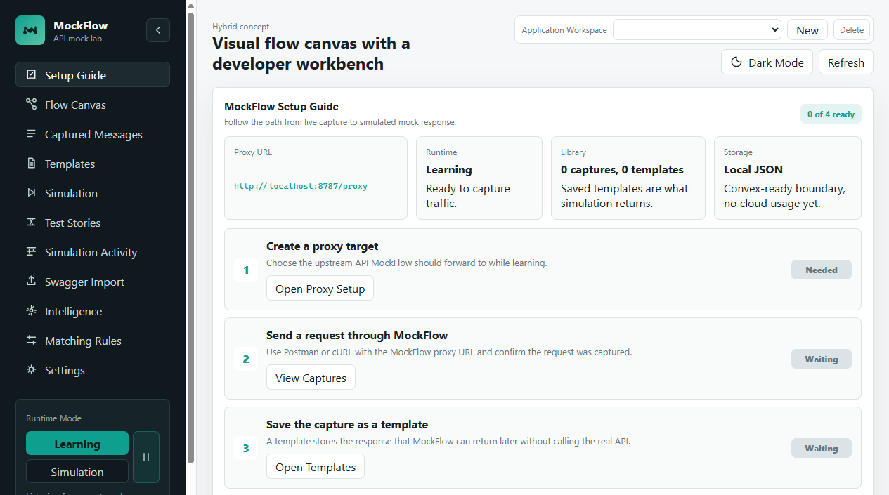
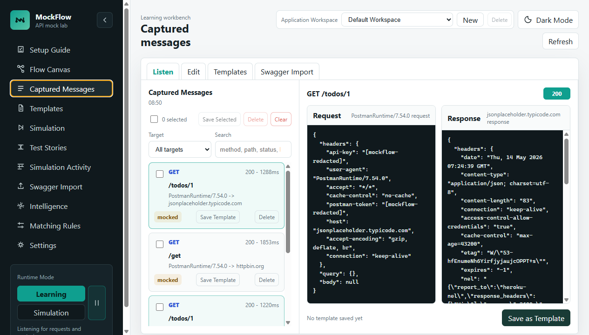

Back to portfolio
Localdesktop agent first
HTTP/Scapture and simulation
OpenAPIscenario generation
Postmantester workflow focus
Beta milestone reached:
MockFlow v0.1.0-beta has passed fresh Windows installer testing, HTTP/HTTPS capture, simulation, large payload, licensing, and release QA. Installer access is kept private and available on request.
API simulation workbench
MockFlow
A local-first API proxy and mock lab for capturing request/response traffic, promoting messages into editable templates, and simulating reliable API responses for Postman-driven testing.

Problem
API teams wait on systems that are not always ready.
Frontend teams, QA engineers, and integration testers often need predictable API responses before downstream services are stable, deployed, or even built. Hand-written mock JSON files work for small cases, but they become painful when the test flow needs headers, matching rules, edge cases, and captured real traffic.
What MockFlow solves
- Captures real request and response pairs in learning mode.
- Creates editable templates that can be reused across test runs.
- Lets testers queue only the templates they want active for a specific flow.
- Supports OpenAPI and Postman collection imports to speed up contract-first testing.
- Adds diagnostics so users can understand why a request matched or missed.
Case-study snapshot
Why this matters for API testing teams.
MockFlow is the tool I wanted when API test runs depended on services that were late, unstable, or hard to reset. It combines proxy behavior, tester-friendly controls, AI-assisted review, and release packaging into one local workflow.
Product ownership
Defined the workflow from learning mode to template promotion, queue-only simulation, diagnostics, and daily tester guidance.
Systems engineering
Implemented local HTTP/HTTPS capture, simulation matching, dynamic response rendering, large payload storage, SQLite/JSON persistence, and safe cleanup controls.
UX judgment
Built for QA users who may not be proxy experts: setup guide, environment doctor, Postman-focused instructions, activity diagnostics, and clear armed-template behavior.
Release readiness
Includes desktop-agent packaging work, redaction, local-first storage, purge controls, and public documentation that avoids source code and captured data.
Feature depth
Built as a tester workbench, not just a mock server.
Learning mode
MockFlow listens to traffic routed through the local agent and captures request metadata, headers, query fields, bodies, upstream response status, response headers, and response payloads.
Template editor
Users can edit method, path, status, delay, request fields, response fields, headers, matching rules, and dynamic response variables such as dates, UUIDs, random values, and request-derived fields.
Simulation queue
Saved templates can be armed in a queue so only selected endpoints respond from MockFlow. This supports controlled end-to-end flows while keeping the full template bank intact.
Queue-only matching
Simulation mode only responds from armed templates. If a matching template exists in the bank but was not queued, MockFlow shows a no-match diagnostic instead of silently returning the saved response.
Scenario intelligence
OpenAPI documents and captured workspace messages can generate reviewable scenarios, duplicate flags, coverage maps, and needs-edit indicators for inferred negative cases.
Large response handling
Very large payloads are stored outside the main workspace state so the UI stays usable. Users can page through large bodies for edits while simulation still returns the full response.
Postman workflow
MockFlow uses Postman and Newman as the request execution layer while the local agent provides the mock response engine and activity diagnostics.
Storage and safety
Local JSON and SQLite storage are supported, with sensitive field redaction, purge controls, workspace export/import, and explicit safety notes for public sharing.
Beta release status
0.1.0 beta is release-ready for controlled demos.
MockFlow has moved past prototype status into a private beta candidate. The current build is intended for controlled walkthroughs and recruiter discussions, not public open-source distribution.
Validated in beta QA
- Fresh Windows installer build and install.
- HTTP and HTTPS capture through Postman.
- Template promotion, editing, and armed simulation queue.
- No-match diagnostics and unarmed-template diagnostics.
- Large response handling and full-response simulation fidelity.
- Community, Team, and Enterprise beta edition gates.
Kept private by design
- Source code and installer artifacts are not published on this portfolio site.
- Captured traffic, API keys, certificates, local databases, and logs are excluded.
- Demo visuals use sanitized data and product screens only.
- Installer access is available on request for controlled review.
Post-beta roadmap
- Signed licensing or a license-server-backed entitlement model.
- Production-grade team/cloud sync beyond the current Convex scaffold.
- Signed/notarized macOS packaging.
- Deeper AI scenario quality tuning and provider cost handling.
Why local-first
MockFlow needs to sit between local tools like Postman and target APIs. A public hosted-only version would not capture local traffic reliably, so the product direction is a desktop/local agent first, with optional cloud sync later.
Product workflow
From setup to simulated responses.
MockFlow uses a local agent and a browser dashboard. The public portfolio shows the workflow while captured traffic, certificates, tokens, and source code stay private.

Setup guide
Guides testers through starting the local agent, checking the environment, and preparing Postman before capturing traffic.

Learning workbench
Shows captured API calls, request/response inspectors, and the promote-to-template path used during learning mode.
Simulation queue
Lets users arm only the templates they want active for a focused Postman or Newman test run.
Architecture
Local proxy, browser dashboard, template engine.
The design keeps traffic capture local for privacy and practicality. The runtime that Postman talks to belongs on the tester machine, while the dashboard provides review, template editing, and simulation controls.
Postman / REST client
Routes requests through localhost.
Routes requests through localhost.
->
MockFlow local agent
Captures, forwards, or simulates.
Captures, forwards, or simulates.
Template bank
Saved responses and matching rules.
Saved responses and matching rules.
->
Simulation queue
Active mock set for the current test.
Active mock set for the current test.
OpenAPI / Postman imports
Create reviewable templates and scenarios.
Create reviewable templates and scenarios.
->
Review workflow
Approve, edit, flag duplicates, and promote.
Approve, edit, flag duplicates, and promote.
Setup and use
- Start the local MockFlow agent from the tray or PowerShell helper.
- Open the dashboard and run the environment readiness checks.
- Configure Postman to route traffic through the local proxy or use the `/proxy/host/path` URL style.
- Capture real traffic in learning mode and save useful messages as templates.
- Edit templates, matching rules, headers, and dynamic response fields.
- Switch to simulation mode, arm templates in the queue, and run Postman tests against MockFlow.
Tech stack
This page describes the product and architecture without exposing source code, captured traffic, certificates, tokens, or local workspace data.
Postman setup
Route requests through the local MockFlow agent.
Postman, Newman, cURL, or another REST client still sends the test traffic. MockFlow sits locally as the capture and simulation engine.
Proxy URL mode
Users can send requests through a local URL such as http://localhost:8787/proxy/httpbin.org/get when they want an explicit MockFlow path.
Forward proxy mode
Postman can be configured to use localhost and port 8787 as the proxy so normal API URLs can be routed through MockFlow.
HTTPS capture
For HTTPS bodies, the generated MockFlow CA certificate must be trusted in Postman or the operating system. The private key stays local and should never be shared.
Response proof
Simulation responses include MockFlow headers and activity entries so testers can confirm whether MockFlow responded, upstream was called, or a matching template was not armed.
Recruiter notes
What the MockFlow case study proves.
The public page focuses on product behavior and engineering choices that can be discussed safely without publishing implementation details, captured payloads, or local certificates.
Service virtualization thinking
The project models the full tester flow: capture, promote, edit, arm templates, simulate, and inspect why a request matched or missed.
Proxy reliability
HTTP/HTTPS capture, passthrough, queue-only simulation, no-match diagnostics, and certificate guidance.
Scenario review
OpenAPI, captured traffic, duplicate governance, needs-edit negative scenarios, and provider-aware AI refinement.
Usability for QA teams
Environment checks, Postman instructions, clear simulation queues, response proof headers, and safe data controls make the tool approachable for non-specialists.